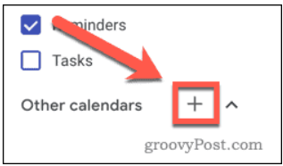

Guide to sync Outlook calendar to Google calendar
Reference: https://www.groovypost.com/howto/how-to-sync-outlook-calendar-with-google-calendar/
Make your Outlook calendar public
-
Sign in into your outlook account.
-
From the menu bar at the top, press the Settings cog icon.
-
Click the View all Outlook settings option at the very bottom of the menu.

-
In your Outlook settings menu, press the Calendar tab, then click on the Shared calendars option.
-
In the Publish a calendar section, click on Select a calendar, then select the calendar you want to sync.
-
Set permissions to Can view all details, then click the Publish button.

-
Click on the ICS link, then press Copy link to copy it to your clipboard.

Publish Outlook calendar to Google calendar
-
At this point, you have make your Outlook calendar public and you can publish it to your Google Calendar. Sign in into your Google account
-
In the left-hand menu, press the plus (+) icon next to the Other calendars option.

-
Select From URL from the menu list that appears.
-
Paste in your Outlook link in the URL of calendar box, then click Add calendar to add the calendar to your inbox.